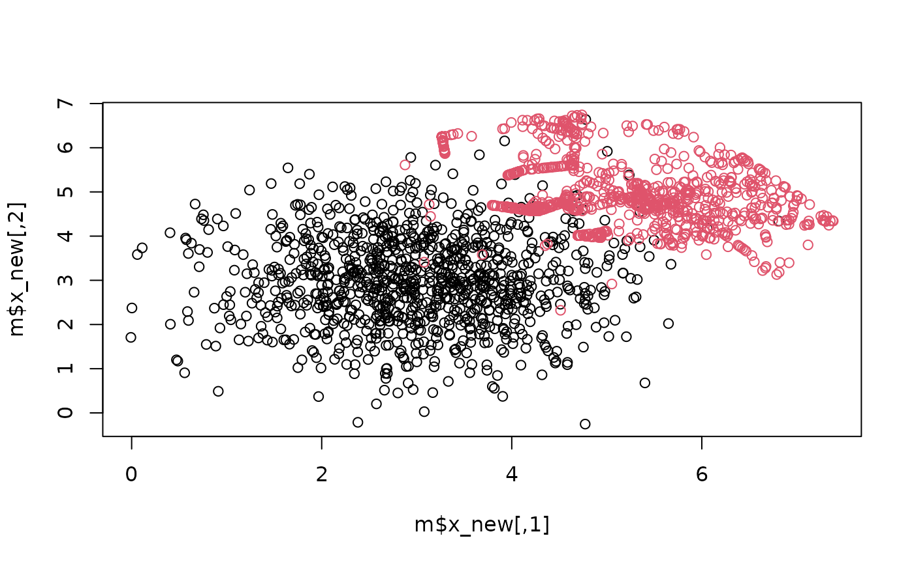

SMOTE with Boosting (SMOTEWB, 2022)
SMOTEWB.RdResampling with SMOTE with boosting.
Arguments
- x
feature matrix.
- y
a factor class variable. Can have more than two classes.
- n_weak_classifier
number of weak classifiers for boosting.
- class_weights
numeric vector of length two. First number is for positive class, and second is for negative. Higher the relative weight, lesser noises for that class. By default, \(2\times n_{neg}/n\) for positive and \(2\times n_{pos}/n\) for negative class.
- k_max
to increase maximum number of neighbors. Default is
ceiling(n_neg/n_pos).- ovRate
Oversampling rate. Class \(j\) receives
round(ovRate * (n_max - n_j))synthetic samples, wheren_maxis the size of the largest class (halves are rounded up). Default is 1 meaning full balance. A vector with one value per class is also accepted.- ...
not used.
Value
a list with resampled dataset.
- x_new
Resampled feature matrix.
- y_new
Resampled target variable.
- x_syn
Generated synthetic data.
- y_syn
Generated synthetic data labels.
- w
Boosting weights for original dataset.
- k
Number of nearest neighbors for positive class samples.
- C
Number of synthetic samples for each positive class samples.
- fl
"good", "bad" and "lonely" sample labels
Details
Year: 2022.
SMOTEWB (Saglam & Cengiz, 2022) is a SMOTE-based oversampling method which can handle noisy data and adaptively decides the appropriate number of neighbors to link during resampling with SMOTE.
Trained model based on this method gives significantly better Matthew Correlation Coefficient scores compared to others.
Can work with classes more than 2.
References
Sağlam, F., & Cengiz, M. A. (2022). A novel SMOTE-based resampling technique trough noise detection and the boosting procedure. Expert Systems with Applications, 200, 117023.
Examples
set.seed(1)
x <- rbind(matrix(rnorm(2000, 3, 1), ncol = 2, nrow = 1000),
matrix(rnorm(100, 5, 1), ncol = 2, nrow = 50))
y <- as.factor(c(rep("negative", 1000), rep("positive", 50)))
plot(x, col = y)
 # resampling
m <- SMOTEWB(x = x, y = y, n_weak_classifier = 150)
plot(m$x_new, col = m$y_new)
# resampling
m <- SMOTEWB(x = x, y = y, n_weak_classifier = 150)
plot(m$x_new, col = m$y_new)
